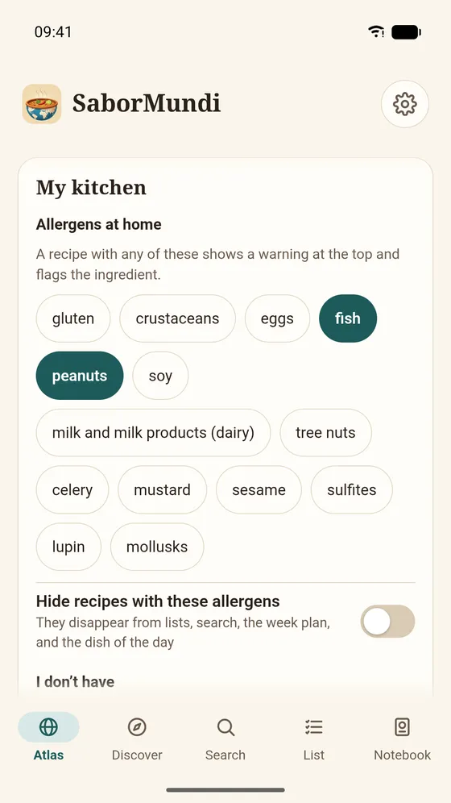
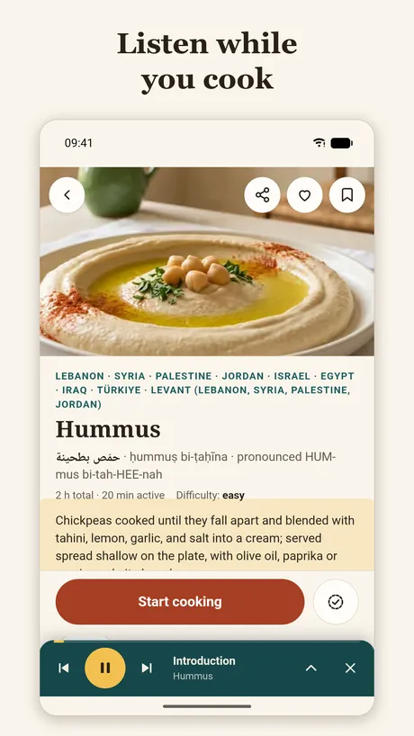
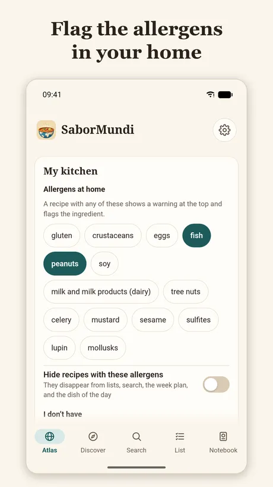

Start
Ein Gericht aus der Welt zum Einstieg.
Der Startbildschirm zeigt das Gericht des Tages mit Foto und Herkunft. Suche nach Name oder Beschreibung oder stöbere in den vorgestellten Rezepten.

Rezepte aus aller Welt
Traditionelle Rezepte aus aller Welt, jedes mit Foto, Zutaten, Schritt-für-Schritt-Anleitung, Allergenen und der Geschichte des Gerichts. Alles auf dem Handy, ohne Internet und ohne Konto.
Kostenlos herunterladen · Monats- oder Jahresabo oder Einmalkauf, um alles freizuschalten
Die App gibt es auf Portugiesisch, Englisch und Spanisch.

Für alle, die gern kochen und ein Gericht kennenlernen möchten, bevor sie loslegen.
Start
Der Startbildschirm zeigt das Gericht des Tages mit Foto und Herkunft. Suche nach Name oder Beschreibung oder stöbere in den vorgestellten Rezepten.
Das Rezept
Jedes Rezept hat Foto, Zutaten, Zubereitung, Allergene und die Geschichte des Gerichts. Passe die Portionen an und wähle metrische oder US-Maße.
Kochmodus
Im Kochmodus zeigt der Bildschirm immer nur einen Schritt in großer Schrift, und die Timer bleiben beim Kochen im Blick.

Vorlesen
Die Stimme deines Geräts liest das Rezept vor, und du hast die Hände frei.

Vorschau
Einige Rezepte sind kostenlos vollständig geöffnet. Die anderen zeigen eine Vorschau: Foto, Geschichte und Allergene.

Hab ich zu Hause
Sag SaborMundi, was in deiner Küche ist, und die App zeigt dir, welche Rezepte du kochen kannst und was noch fehlt. Filtere nach Ernährung: vegetarisch, vegan, glutenfrei, ohne Milchprodukte.

Einkaufsliste
Sammle die Zutaten der gewählten Rezepte in einer Einkaufsliste nach Abteilungen und ergänze, was du sonst noch brauchst.

Meine Küche
Markiere die Allergene der Menschen, mit denen du lebst. Jedes Rezept, das eines davon enthält, zeigt oben einen Hinweis und hebt die Zutat hervor.

Der Download ist kostenlos, und einige Rezepte sind vollständig geöffnet, damit du die App ausprobieren kannst. Ein Monats- oder Jahresabo oder ein Einmalkauf schaltet alle Rezepte frei.
Die Bildschirme der App (auf Englisch).






Kein Konto, keine Werbung und keine Datenerhebung. SaborMundi baut von sich aus keine Internetverbindung auf: Was du markierst, bleibt auf deinem Gerät und verlässt es nur, wenn du ein Rezept oder die Liste teilst oder die Sicherung exportierst.
Der Download ist kostenlos, und einige Rezepte sind ohne Kosten vollständig geöffnet. Die anderen zeigen eine Vorschau mit Foto, Geschichte und Allergenen. Ein Monats- oder Jahresabo oder ein Einmalkauf schaltet alle frei. Es gibt keine Werbung.
Ja. Rezepte, Suche, Kochmodus und Einkaufsliste funktionieren auch offline. Nur der Kauf läuft über den Store.
Auf Portugiesisch, Englisch und Spanisch.
Nein. Es gibt keine Anmeldung. Um deine Daten auf ein neues Handy mitzunehmen, exportiere die Sicherung.
Die Rezepte nennen die wichtigsten Allergene und Sicherheitshinweise, aber Marken und Zutaten unterscheiden sich. Prüfe immer das Etikett jedes Produkts und folge dem Rat deiner Ärztin, deines Arztes oder deiner Ernährungsberatung.
Lade sie kostenlos für iPhone, iPad oder Android herunter.